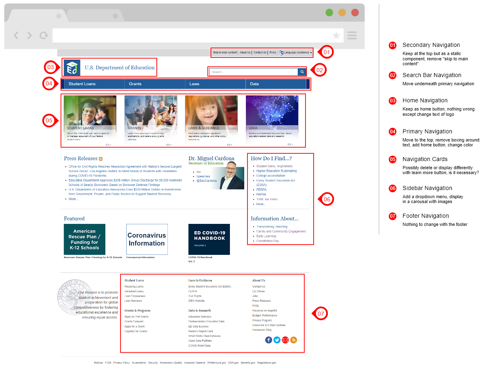
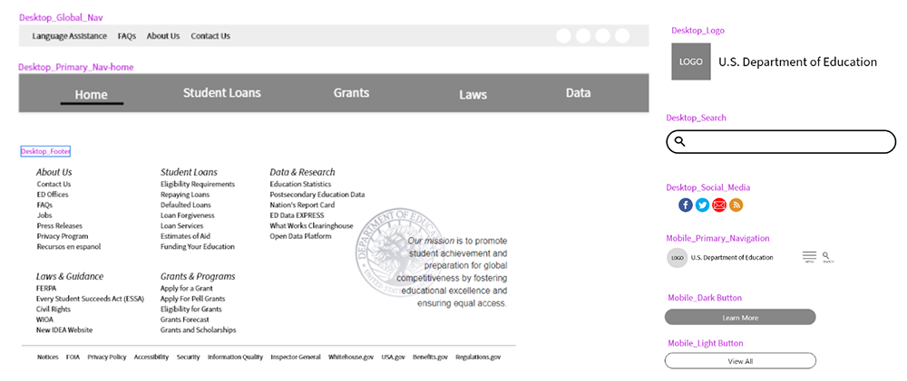
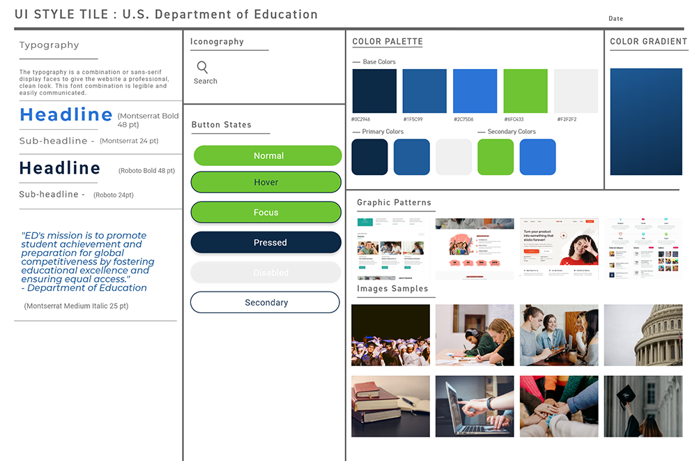
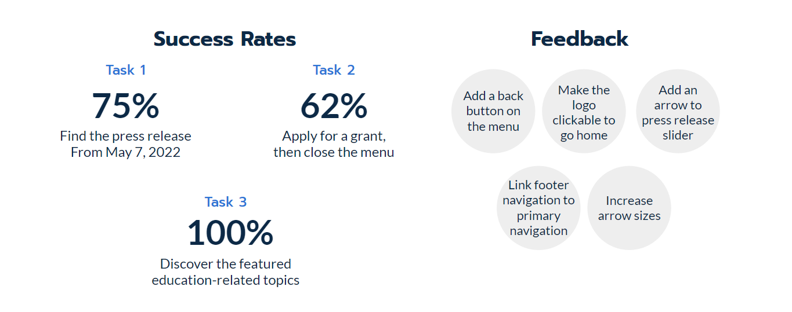

The U.S. Department of Education's mission is to provide information on available student loans, grant opportunities, and federal education legislation. For my class project, I was challenged to redesign the website's homepage and improve the information architecture. The homepage and information arhcitecture needed to be designed to better fit users' expectations and the page design needed to be more visually appealing and more intuitive.
I worked on this project individually as part of UCF's UX/UI Bootcamp. Over the course of 4 weeks, I performed user research and user testing, and created a sitemap, wireframes, and a prototype.
I used a 5 stage Design Thinking process. The stages of the process are as follows:

On the department's website, there is a lack of imagery and consistency. I have observed that the U.S. Department of Education's homepage and navigation is frustrating users by the overwhelming amount of information and external links. How might I improve the website's navigation and homepage structure to better suit users' expectations?
The first task I focused on was the research strategy. In order to idenitfy obsticles
a user may encounter in the current UX and UI, I conducted a navigation usability test
by interviewing individuals that best fit the user archetype. The individuals tested
were college students or college graduates under the age of 30.
Before I conducted the usuability tests, I redlined and annotated the website to determined
the steps a user may take to complete the given task. Additionally, I prepared
3 tasks for the user to complete during usability testing.
The following is the research questions I focused on for each usability testing:
I studied the user's path of the website and determined the decisions and user may make. During user testing, I focused on the decisions each user made to successfully complete the task.

After I completed usability testing, I reviewed my notes to gather key insights.
The current navigation of the website does not include dropdown menus, confining the user from finding information quickly. This is evident in the user testing insights. Keeping the user testing results and the card sorting outcome, I created a sitemap to follow to create the redesign of the navigation.


These navigation components wireframes consist of the visual layout to be used across the website.


I came up with a design system to add structure, consistency and communication across the board. I chose simple, readable typeface to improve reading legibility at both small and large sizes. The color palette is mature yet modern and has an aesthetic contrast. The imagery adds character to the page.
I tested the lo-fi wireframes with a total of 9 users.
